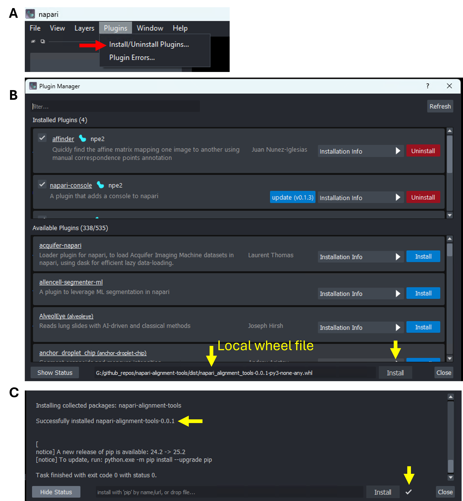
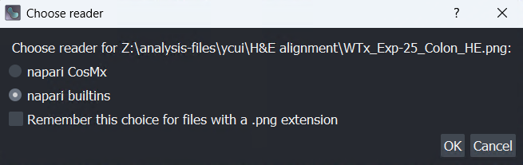
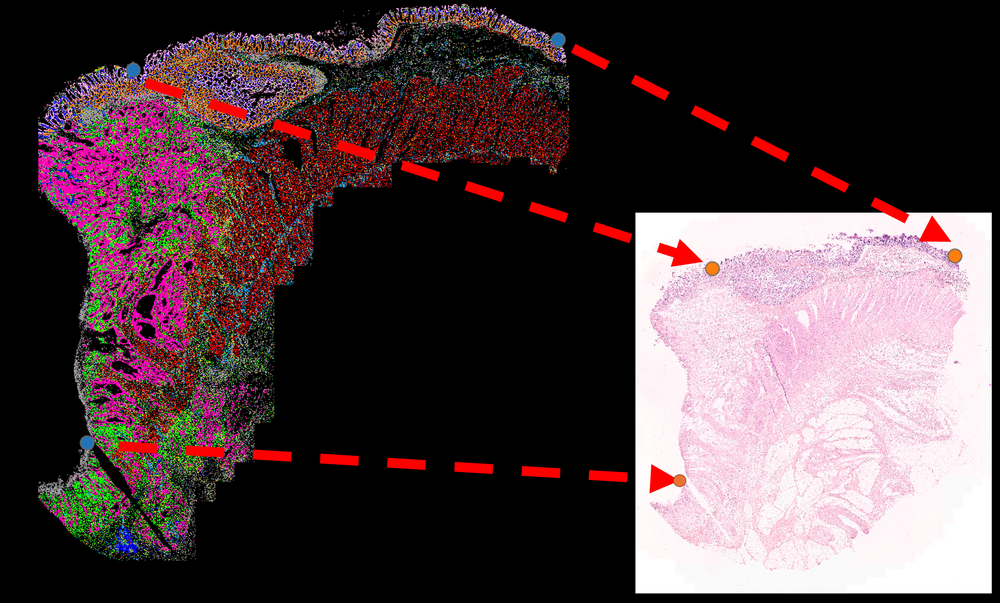
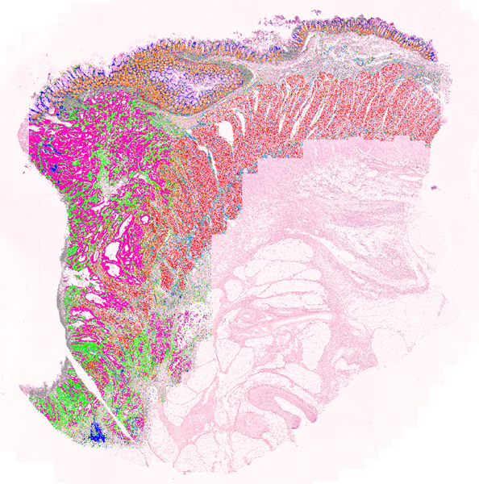
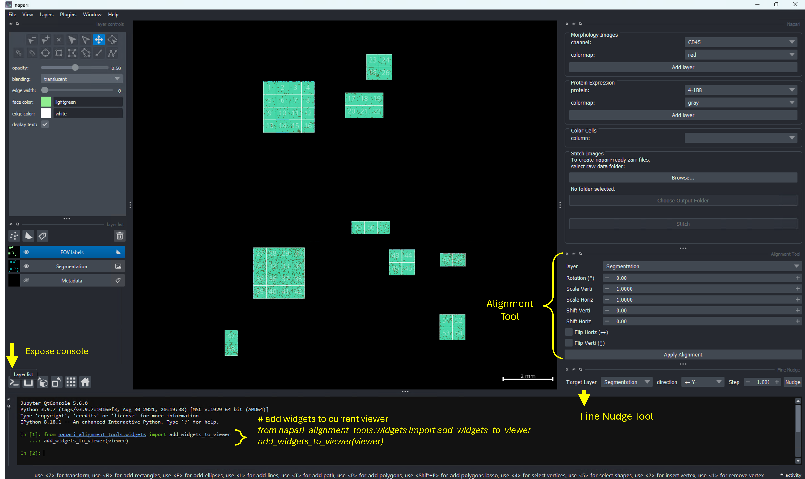
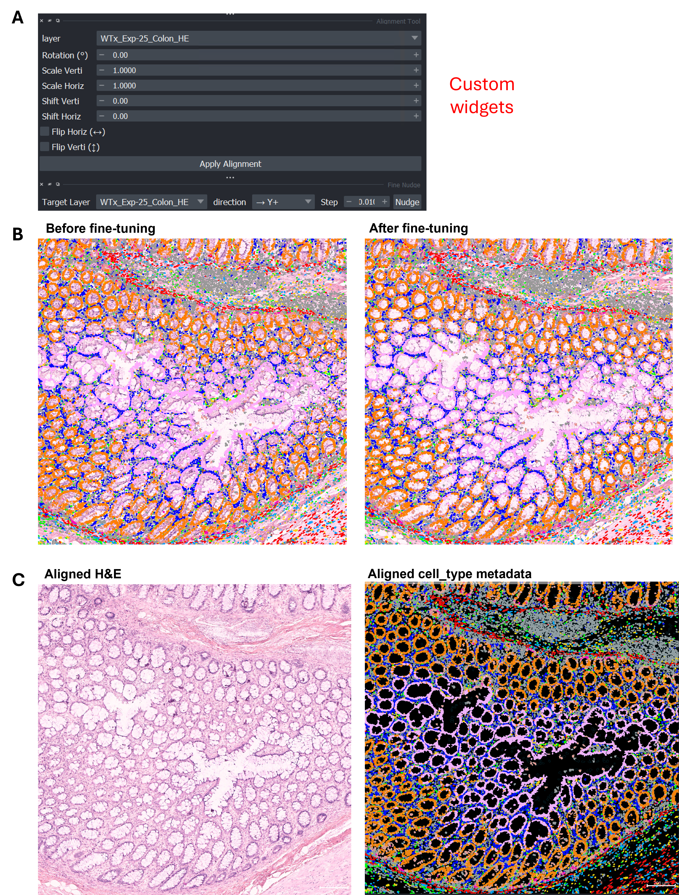

Aligning Hematoxylin and Eosin (H&E) histology with CosMx® Spatial Molecular Imager (SMI) data is more than a cosmetic step: it’s turning two complementary modalities into a single, interpretable picture. H&E provides the spatial scaffold which includes tissue boundaries, cell shapes, and histopathology cues, while CosMx adds the multiplexed molecular profile for each cell. When accurately aligned, these layers reinforce each other: structure informs expression, and expression validates structure. However, it’s a common challenge to align these two kinds of images as they often differ in scale, orientation, or position due to variations in acquisition methods.
In this tutorial, we’ll walk through how to effectively align H&E and CosMx images in napari with a two-part workflow:
first do a quick landmark-based alignment with affinder plugin,
then fine tune with custom transformation widgets napari_alignment_tools for controlled micro-nudges.
By the end, you’ll be able to:
Load stitched CosMx data and matching H&E images in napari.
Perform coarse alignment with affinder (affine/similarity/euclidean models).
Fine-tune transforms with intuitive widgets napari_alignment_tools for pixel-level adjustments.
Verify results visually and save an aligned H&E ready for analysis.
It’s recommended to create a dedicated environment for napari applications. If you already have an environment with napari and napari-cosmx plugin installed, you could just activate that environment directly and proceed to Section 2.2.
Below is the example command line to create virtual environment napariEnv.
Following the instructions in earlier post, one should next install the napari-cosmx plugin from the latest wheel file for interacting with CosMx data.
With napari-cosmx plugin installed, one could start to prepare CosMx napari dataset and overlaying single-cell and transcriptional analysis results on top of morphological images. Please refer to earlier napari post series for more details.
(A) Launch plugin manager; (B) Locate affinder in search box and install (red arrows). (C) The installed plugin would show up under Plugins menu when launching napari next time.

For cutom plugin, (A) launch plugin manger under Plugins menu; (B) Drag the downloaded wheel file to the bottom field and click install (yellow arrows) and watch Show Status (C) for the installation progress.
3 Data prerequisites
CosMx (stitched) dataset: See the naparistitching tutorial on how to create it for your dataset. Example file path at ~/data/cosmx/Napari.
H&E image: Example file path at ~/data/cosmx/WTx_Exp-25_Colon_HE.png.
Napari supports various other image formats, including TIFFand Zarr.
If your file format is not supported, you could convert it to the supported formats with other tools like QuPath (see here).
Tip
For H&E of large file size, prefer Zarr-backed images and avoid loading every layer at full resolution. Use the minimum layers you need for alignment.
4 Alignment workflow
4.1 Load data
Start napari.
Load H&E: Drag the H&E file into napari GUI (it will be a 2D image layer), choose napari builtins reader if prompted.
Load CosMx dataset: Drag the pre-stitched cosmx data folder (which contents morphology image, cell segmentation, cell‑type metadata, etc.) into napari GUI, choose napari CosMx reader if prompted.

Choose reader based on image/data type.
4.2 Coarse alignment with affinder (landmarks)
Goal: Compute a transform that maps the Moving H&E layer onto the Reference CosMx layer by clicking corresponding landmarks.
Open affinder: Plugins → affinder → Start affinder. A right‑dock widget appears with drop-downs listing your layers.
You can further click on the Select file field next to Save transformation as line of the widget to export the transformation matrix for future usage.
euclidean: translation + rotation only (most rigid).
Select layers:
Reference Layer = your CosMx image (e.g., morphology or cell_type metadata image that has clear features).
Moving Layer = your H&E image.
Start point selection: Click Start in the affinder widget.
affinder adds two Points layers—one for the reference, one for the moving image.
The viewer would focuse you on the Reference layer first. Click at least three distinct, clearly identifiable landmarks (features visible in both images) in the Reference layer.
The viewer would then switch focus to the Moving (H&E) layer. Click the corresponding points in the same order.
Transform application: After the third pair is placed, affinder computes and applies the transform so the H&E (Moving) aligns onto the CosMx (Reference). Continue adding additional pairs (alternating layers) to refine the alignment iteratively. The more points you add, the more accurate the alignment.
Click Finish when the coarse alignment looks good. The transformation matrix used would be saved to the file defined in step (1).
Important
Order matters! Always click correspondence points in the same order across Reference and Moving images.
The napari viewer has both kinds of image data loaded before starting the affinder. CosMx data layer cell_type is choosen as reference layer, while H&E image WTx_Exp-25_Colon_HE is chosen as moving layer.

Pairs of points are selected in the 2 layers before applying the transformation.

Upon clicking Finish, the Moving layer (H&E) is now displayed in a way aligned to the Reference layer (CosMx cell_type metadata) based on the anchor points selected.
4.3 Fine‑tuning with custom transform widgets
Use the widgets from napari_alignment_tools to make controlled adjustments after affinder’s coarse alignment.
As shown in figure below, there are 2 ways to open the napari_alignment_tools widgets (B):
Option 1 (A): Go to napari menu, Plugins → Alignment Tools → Alignment Tool and Fine Nudge.
Option 2 (C): Go to the the console > at bottom left corner of the dataset-loaded napari viewer and run:
add custom widgets in napari console
from napari_alignment_tools.widgets import add_widgets_to_vieweradd_widgets_to_viewer(viewer)
This adds two dock widgets to the right dock: Alignment Tool (for coarse parameters) and Fine Nudge (for small increments). Both widgets allow you to put in defined numbers (instead of adding points) for transformation and thus allow the alignment occur in a more controlled way.

After loading a pre-stitched cosmx dataset in napari, one could add the custm widgets (B, to the right dock) either (A) via Plugins menu or by (C) running short python command in napari console.
4.3.1 Use the Alignment Tool (top panel)
Layer selection: In Alignment Tool, choose your H&E image layer (the Moving layer you want to adjust).
Adjust as needed:
Rotation (−180 to 180°)
Scale Verti/Horiz (0.0001 to 1000)
Shift Verti/Horiz (−1000 to 1000 px)
Flip Horiz/Verti (checkboxes)
Apply: Click Apply Alignment. Inspect by toggling visibility and using opacity sliders.
4.3.2 Use the Fine Nudge Tool (micro adjustments, bottom panel)
Layer selection: Choose the H&E layer.
Direction & step size:
Pick a direction—left (Y−), right (Y+), up (X−), down (X+), rotate counter‑clockwise (Rotate−), rotate clockwise (Rotate+).
Set the Step (e.g., 1 px for translation; 0.5–1° for rotation).
Apply Nudge, repeat this until alignment is precise.

(A) Custom widgets from napari_alignment_tools; (B) Overlay of cell_type metadata on top of H&E image before vs. after fine-tuning; (C) Side-by-side view of the post-fine-tuned images.
Tip
Use opacity on the H&E layer to blend with the CosMx background.
Toggle layer visibility (V) to quickly inspect.
Link pan/zoom across layers by multi‑selecting layers and enabling Link Layers (chain icon) in the layer controls.
4.3.3 Verify & save
Visual checks: Zoom into salient structures (tissue boundaries, lumen edges, sharp features) and ensure edges coincide across layers.
Save the transformed H&E: File → Save Selected Layer(s) and pick your desired format (e.g., TIFF or Zarr). Consider also saving the Points layers or the transform matrix if your widget exposes it.
5 Practical Tips
Either affinder or the custom transformation widgets can be used independently to achieve the same alignment outcome. The former uses point inputs, while the later uses the numeric inputs.
Pre‑stitch CosMx FOVs before alignment so both widgets sees a continuous reference image (see stitching tutorial).
Mind the scale. If CosMx and H&E pixel sizes differ greatly, start with Affine model in affinder, then refine scale with the custom Alignment Tool.
Avoid overfitting. Don’t spam too many landmarks at once; add a few, check, then add more if needed.
Work on downsampled data to prove the transform, then apply at full resolution if your workflow supports it.
![]()